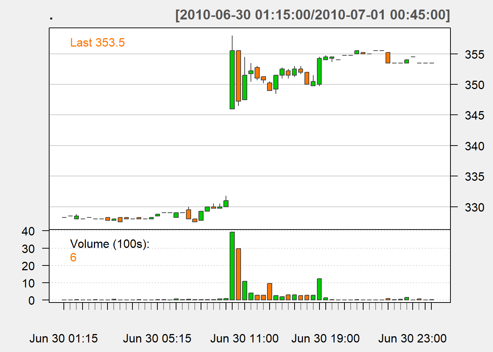
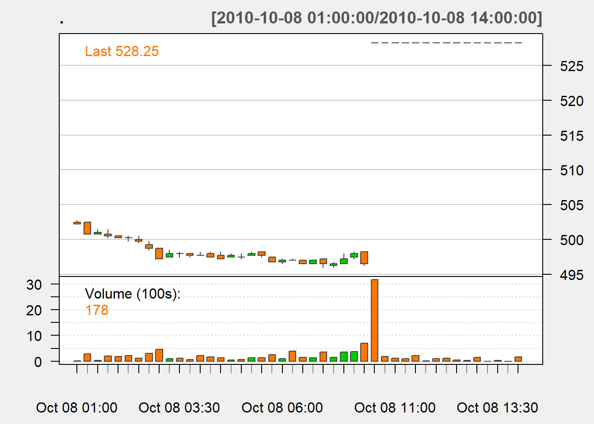
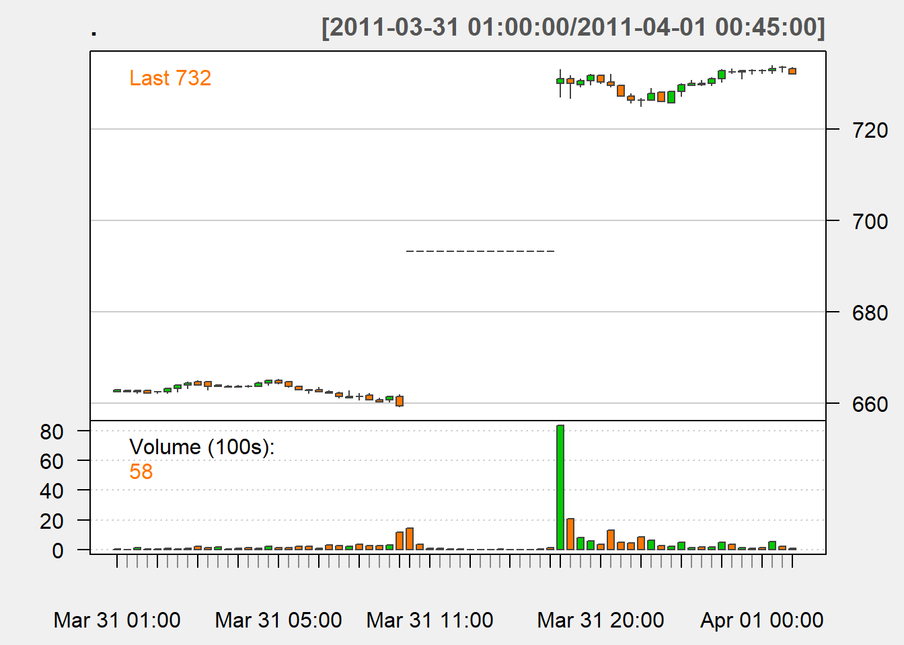

11 Price Reaction to USDA Reports
Interested in more? Please let me know by taking the survey!
Some of the USDA reports contain very sensitive market information causing market prices to adjust rapidly to new information about supply and demand. Access to the contents of a market sensitive report would result in the ability to perform ‘insider trading’ and obtain nearly risk-less profits. This activity is illegal, and the USDA’s Interagency Commodity Estimates Committees prepares the reports under lock-down conditions where during the process of finalizing estimates of the report’s content, officials are locked in a secure area and not allowed to leave until the report is made known to the public.
This chapter explores some history related to the compilation and release of USDA reports, discusses how release times have evolved over time, indicates some particular report releases that are more likely to cause large and rapid price adjustments, and demonstrates this with a few charts of transactions prices pre- and post-release of particularly interesting recent days.
11.1 History - “The Great Data Leak of 1905”
This abundance of care can be traced to a particular event in history. The details of which are recounted in a historical publication by the NASS.

Source: NASS: About Nass
11.2 Excerpt From Chapter 1
The summary and release procedures for the USDA Bureau of Statistics’ reports in the early 1900s produced separate summary tabulations for each data source available (up to six sources, in some cases)… It is also relevant that the release time for cotton reports in those years was noon, Eastern Time, and that the commodity markets discontinued trading for an hour starting at noon on release days. The original procedures allowed the three people who had determined the final numbers to go about their business, or even leave the building if they wished, once a report’s contents had been set.
In 1904 there were rumors about insider trading. As came to light later, one of the three Bureau of Statistics people, E.S. Holmes, Jr., did have an outside partner, a NewYork cotton trader named Louis Van Riper. Shortly after an estimate was set, Holmes would meet Van Riper and tell him what cotton estimate was going to be published. Van Riper would take whatever market action would be most profitable based on the advance information.
The scheme came to light following the cotton acreage report issued on June 2, 1905. The three members met and adopted the state and national figures to be published. After Holmes had sent his signal, one of the other people who had worked on the report asked for reconsideration. After further review, the figures to be published were revised. At that point, the outside partner had already interpreted the original signal and proceeded to place trades. The scheme came to light when Van Riper charged in a telegram that a “fraudulent” report had been released. In explaining why he thought this was a false report, he unwittingly revealed that he had the information ahead of time. Evidently, Holmes’ outside partner had an overabundance of ego, but not a good balance of common sense in going public with his story. (Allen 2007)
This story is quite similar to the plot line of the 1980’s movie, Trading Places.1 Where the protagonists (Dan Aykroyd and Eddie Murphey) trick to antagonists, the Duke Brothers by replacing the ‘Orange Juice Crop Report’ that they obtained illegally with a forged one that would cause exactly the opposite price effect. They started buying before the report to profit and Dan Aykroyd and Eddie Murphey start selling based on the correct crop report information. The frenzy on the trading floor captures the feeling of what happens during crop reports that move the market, even if there is no longer trading on a physical floor as shown in the movie.
11.3 Changing Report Release Times
Timing of report releases has important implications for the market reaction as well. Figure 2 below provides a brief history of report release times of major market sensitive reports.

Prior to 1994 most market sensitive USDA reports were released at 3pm EST. This made sense from the USDA workflow perspective because it allowed the lock-down to be enacted during normal working hours, minimizing disruption of the analysts’ regular lives. By the early 90’s releasing the report at this time became unpopular with market participants. By releasing the report late in the afternoon in the U.S. futures markets in other parts of the world could trade the USDA numbers overnight before the U.S. market had a chance to react. Therefore price discovery after reports was essentially shifted from Chicago to other major exchanges across the world.
In May of 1994, the USDA shifted the release time to 8:30am EST. This meant the report was released during regular business hours in the U.S. and just one hour before trading begins on the U.S. futures exchange. While clearly preferable to market participants in the U.S. this moved the USDA’s lockup time to overnight hours (Allen 2007).
By 2011, presumably due to the ability to trade electronically with high speed, there was a desire for the futures market to be open and actively trading at the time USDA reports were released. In this case, the futures exchange acted first, expanding trading hours to an earlier market open. Eventually, since futures market participants wanted it, and because came with the added benefit of moving the beginning of the lockup period from late night to early morning, the USDA began releasing most reports at 12pm EST on January 11, 2013.
11.4 Price Reactions
Market prices react strongly to USDA reports when the reports inject significant and unanticipated information into the market. Some reports are more likely than others to produce fireworks in terms of market price.
| Report | Dates | Reason |
|---|---|---|
| Grain Stocks | Quarterly | Information about scarcity or surplus of supplies |
| Prospective Plantings | End of March | Acreage and therefore production estimates |
| Planted Acres | End of June | Acreage and therefore production estimates |
| WASDE | October | Some years the Oct report will contain significant revisions from previous estimate |
| WASDE | January | Final production estimate for the preceding harvest. Sometimes includes and unanticipated revision |
| Crop Progress Report | Weekly | Condition estimates. Only moves market prices if significant deterioration associated with a drought or flood occurs |
- Grain stocks
-
Estimates only come out quarterly. Since the information about whether we have a scarcity or surplus is a primary driver of price, and since we only get this report four times per year, the stocks estimate can cause significant adjustments in price.
- Prospective Planting and Planted Acres
-
Reports give a baseline expectation about production for the coming marketing year. Deviations from expectations or recent history will cause rapid adjustments in price.
- WASDE
-
The reports in October and January are relatively more likely to cause rapid price adjustments than other months because in October the yield estimates tend to become more precise and can involve significant revisions from the previous month’s estimate. Similarly, January report contains finalized estimates of the crop production and in some cases will involve unexpected revisions from previous estimates.
- Crop Progress
-
These reports generally only move markets when crop conditions are deteriorating rapidly due to drought or excess moisture. During years with more typical weather, this report does not affect markets much week-to-week.
11.4.1 Some Examples of Recent Big Market Reactions
Using the Best Bid Best Offer database from the CME Group’s DataMine we can examine historical intraday transaction prices (like what is available streaming in real-time from Yahoo Finance or other sources). These data are time-stamped to the second and allow the most accurate and fine scale picture of futures market trading tick-by-tick.
Three examples come from the 2010 marketing year.
The June 30 Planted Acres report resulted in the market opening (at 8:30am EST) 15 cents higher than it closed the overnight trade just two hours earlier. Ultimately it closed the day trading session 3.54 cents/bushel - 7.5% or 25 cents higher than the most recent pre-report price. Two put that into perspective, 25 cents that is an increase in value of one futures contract of $1,250, since future contracts are specified for a quantity of 5,000 bushels.
Figure 2: Price of July 2010 corn on June 30, 2010 before and after the release of Planted Acres Report
In the top panel of Figure 2 you can see that the time stamps indicate those are transactions occurring in the overnight electronic market. There is a break in the morning prior to 9:30 CST when trading begins in the daytime session. It is in this period that the Planted Acres report is released. The bottom panel only displays the daytime session, so that you can see the trading action more clearly. Between 9:30am and about 10:15 the market trades in a 10 cent range.
The Oct 8th WASDE report caused the market to open limit up. The exchange sets the maximum fluctuation a futures price can trade in a given day. The value of the limit can change at the discretion of the exchange with some advance notice. The report indicated a sharp drop in forecasted yield for corn. This resulted in the ending stocks number for the 2010/2011 marketing year forecast below 1 billion bushels with a very low stocks to use ratio as well. The market reaction is show below in Figure 3.
Figure 3: Price of December 2010 corn on October 8th, 2010 before and after the release of the WASDE Report

The flat line during the daytime trading session is apparent, resulting from prices being locked at the limit during the entire trading day.
Figure 5: Price of May 2011 corn on March 31st, 2011 before and after the release of the Planted Acres Report

This report indicated that corn acreage was to be higher than previously expected, but corn stocks were lower than expected. The stocks number dominated the price direction strongly and the market traded limit up on this day as well.
11.5 Conclusions
This chapter reviewed the history of report released by the USDA. We noted a data leak in 1905 led the agency to consider security from an early date - a important component of report production that persists to this day. We also learned that the Prospective Plantings, Planted Acreage, October WASDE, January WASDE, and Grain Stocks reports are the most likely to produce rapid price adjustments in the market. Some specific examples were given, and depicted through charts of transaction prices.
Allen, Richard. 2007. Safeguarding America’s Agricultural Statistics. U.S. Department of Agriculture, National Agricultural Statistics Service.
Anyone interested in a career in trading should watch this movie and then watch it again. You still hear references to the movie.↩︎